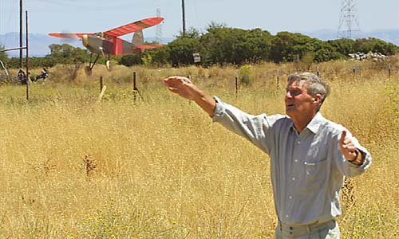
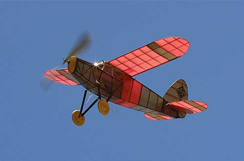

| Like many others in the Marin Aero Club, George has a few Jimmie Allen models. Shown here is the Sky Raider model. It is a great flyer, and George was tempting fate by flying with the DT disengaged. Fortunately there were no thermals nearby during this flight. It really looks the part as it circles skyward, catching the sun on the windscreen. |


Copyright 2001, Thayer Syme. All rights reserved